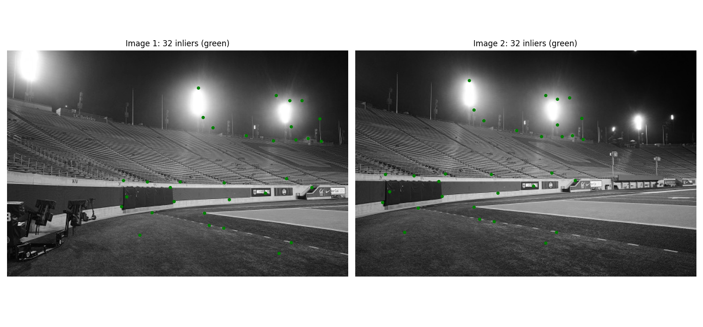
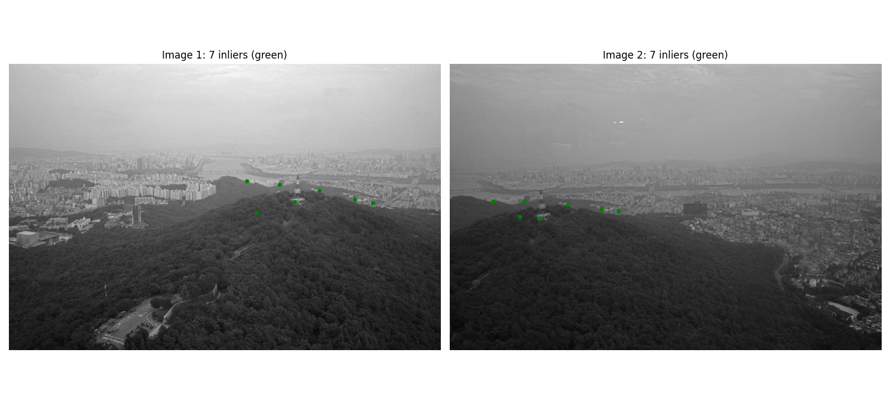
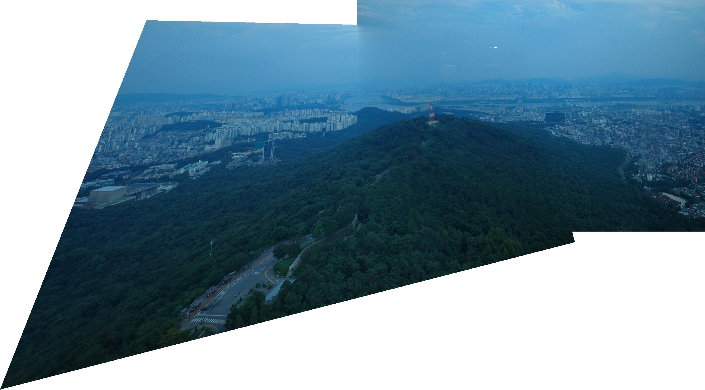
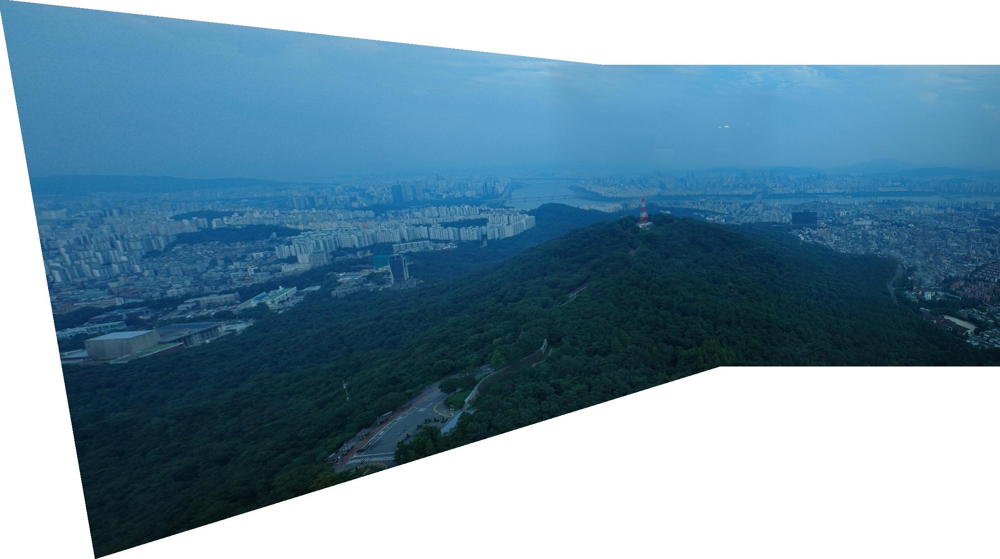
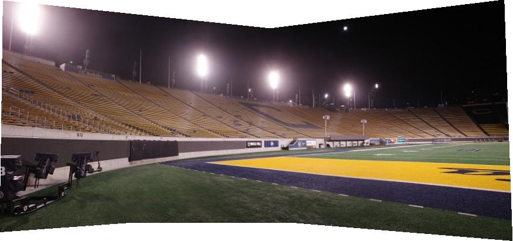
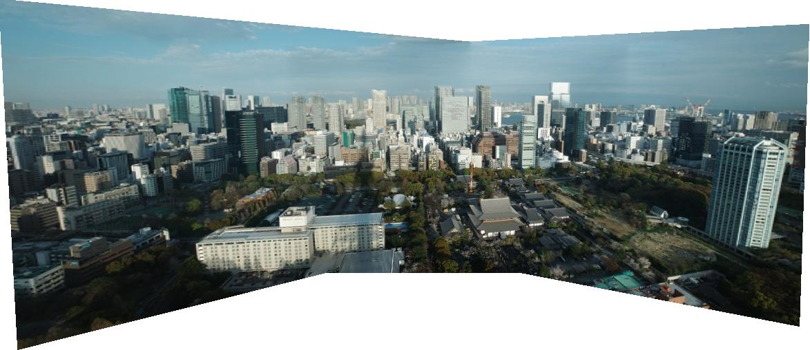

Project 3B: Autostitching Photo Mosaics
Automatic Feature Detection and Matching
In this part I aim to automate the mosaic creation process used in the last part. This requires me to implement methods to detect correspodences. To do this we will use feature descriptors, features sorting algorithms like ANMS, and finally use RANSAC to estimate the correct homography.
Part B.1: Harris Corner Detection
Detected Harris Corners
Harris corner detection is a simple algorithm that searches for large changes in intensity. It does this by computing the second moment matrix of the image and then computing the corner response function. The corner response function is computed by the determinant of the second moment matrix minus a small term times the trace of the second moment matrix squared. This is then thresholded to detect corners.
This is incredibly useful for finding correspodence points, but we don't want to have clustered points. In the images below, you can see that corners tend to appear in clusters around objects that have sharp corners. This is no good for our correspodence points because we want a large spread distance wise across the image. The larger the distance spread, the more accurate the homography. Intuitively, two corners that are very close, is not too different from a single correspondence point.

Harris Corners (100 points)

Harris Corners (200 points)
Adaptive Non-Maximal Suppression (ANMS)
ANMS solves this problem by computing a suppression radius for each corner. This radius is the minimum distance to another corner with a significantly stronger response. This ensures that we have a large spread distance wise across the image. The larger the distance spread, the more accurate the homography. Intuitively, two corners that are very close, is not too different from a single correspondence point. Below you can see the difference.

ANMS: 100 Distributed Corners

ANMS: 200 Distributed Corners
Part B.2: Feature Descriptor Extraction
Feature Descriptor Examples
Now we need a way to match two points in separate images. To do this, we will create feature descriptors for each point. My simple implementation is to take a 40x40 pixel window around each point, downsample to an 8x8 pixel window, and measure differences between features. Below are some example features extracted by my algorithm.
This could be made much more robust with more sophisticated algorithms, but this is a good start and worked okay for my purposes.

Example Feature Descriptors (10 features shown)
Part B.3: Feature Matching
Feature Matches Visualization
To match features, we will compare each feature descriptor to every other feature in the other image. The goal is to extract the best and second best match for each feature. Then we will use the Lowe ratio to determine a 'good' match. The Lowe ration is defined as the error of the best match divided by the error of the second best match. If this ratio is less than 0.8, then we consider the match to be 'good'. Below you can see the result of my feature matching algorithm.

Feature Matches Between Image Pair

Matching using Lowes Ratio
Part B.4: RANSAC for Robust Homography Estimation
RANSAC is the last step in our mosaic creation. First, we randomly sample 4 point correspondences from our 'good' set of matches from Lowes. We do this a set number of times and compute a homography matrix from each 4 point set. For each homography, we check how many inliers there are with a set smal error threshold. If the homography is a good representation of the shift, there should be lots of inliers. 4 points that are not matches will generate homographies that are terrible represenations of the population.
We then select the homography with the most inliers and use these inliers to recompute a final homography matrix. Below you can see the 'inliers' left from running RANSAC on the Lowes set above.
RANSAC Inliers

RANSAC Inliers/p>
Seoul: Matching Challenges and RANSAC Solution

Initial Feature Matches (with outliers)

After RANSAC (inliers only)
Manual vs. Automatic Stitching Comparison
For the most part, automatic stitching is easier and more accurate than manual stitching unless you take the time to be pixel perfect with every correspondence. However, for my Seoul image set, the automatic stitching struggled to find any good corners. This caused RANSAC to find transformations that included outliers and inliers. This is a weakness of RANSAC, because without a lot of points, the population may not represent the true transform. However, this could likely be fixed with stronger feature descriptors. Solving for rotation invariance and scale would improve the feature matching drastically.
These images also have less overlap than my other sets of images. I was able to solve this and get the automatic stitching to work by scaling back up to a higher resolution image.
Comparison 1: Seoul

Seoul: Manual Correspondences (Part A)

Seoul: Automatic Stitching (Part B)
Stadium and Tokyo Automatic Mosaic

Stadium: Automatic Mosaic (1, 2, 3)

Tokyo: Automatic Mosaic (1, 2, 3)
Return to Part A
Want to review the manual mosaic creation process? Click below to return to Part A.